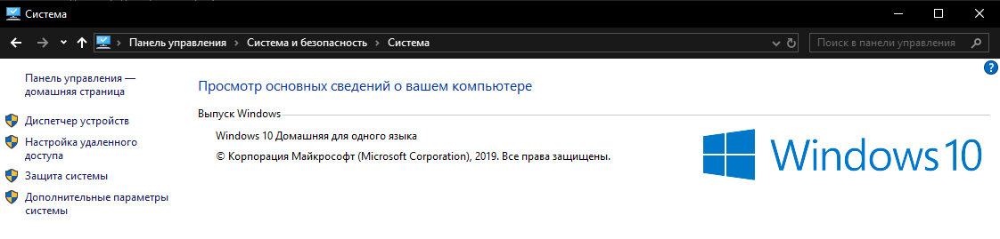
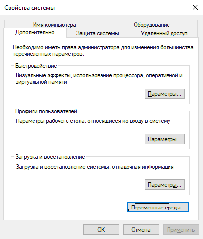

Начало
Установка Java
Для начало скачайте последнию версию Java c www.oracle.com
Внимание: Скачайте Oracle JDK(Java Development Kit)
Запустите загруженный файл и установите как любую другую программу.
Если у вас Windows то для вас еще ничего не окончено, если же нет то можете пропустить следующий этап.
Установка для Windows
Перейдити в Cвойства системы (Панель Управления > Система и безопасность > Система > Дополнительные параметры системы)
Нажмите кнопку Переменные среды под вкладкой Дополнительно
Выберите переменную Path в системных переменных и нажмите кнопку Edit
Нажмите на кнопку Создать и добавьте путь, где установлена Java, а затем \bin. По умолчанию Java устанавливается в C:\Program Files\Java\jdk-14.0.2 (если при установке ничего не было указано).
Затем нажмите «ОК» и сохраните настройки
Наконец, откройте командную строку (cmd.exe) и введите java -version, чтобы увидеть, работает ли Java на вашем компьютере.
Введите в командной строке следующее (cmd.exe):
Если Java была успешно установлена, вы увидите что-то вроде этого (в зависимости от версии):
Java(TM) SE Runtime Environment 18.9 (build 11.0.1+13-LTS)
Java HotSpot(TM) 64-Bit Server VM 18.9 (build 11.0.1+13-LTS, mixed mode)